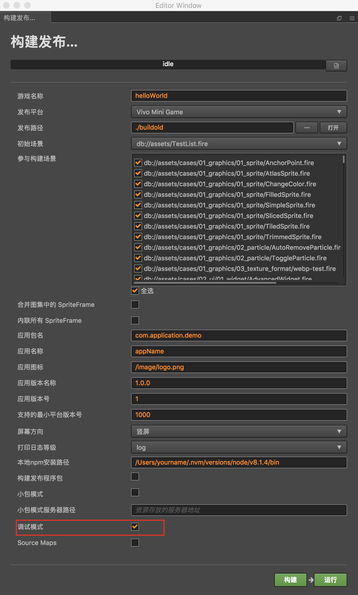
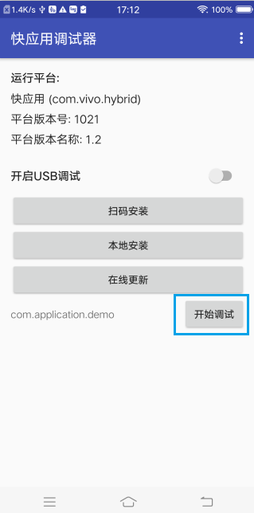
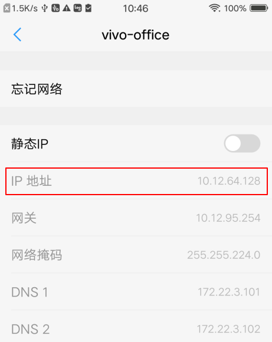
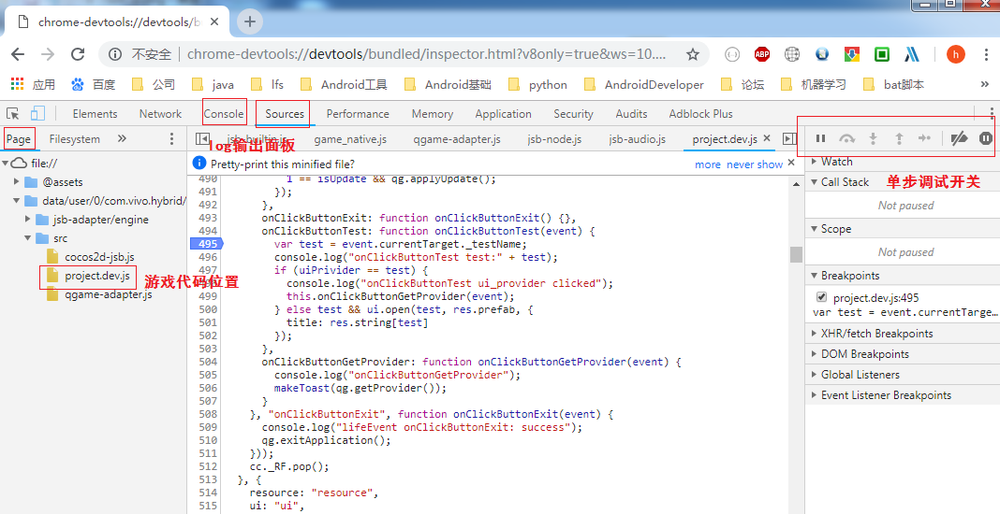

chrome调试快游戏代码说明
1 开发平台支持情况
| 开发平台 | chrome浏览器版本 | 是否支持 |
|---|---|---|
| iMac | 69 | 支持 |
| Linux | 69 | 支持 |
| Windows | 69 | 不支持，cocos正在分析 |
| Windows | 低于69 | 支持 |
注意：Windows平台下chrome最新版(69)不支持真机调试快游戏代码，其余开发情况组合均可支持。
2 环境准备
安装支持调试的引擎vivo_v1.2.1.1-RC-52_201810151438_chrome.apk，下载
安装调试器
保持手机和电脑在同一局域网中
3 编译debug版本游戏
3.1 针对Cocos Creator用户
在 Cocos Creator 的构建发布面板选择 Debug 模式，构建编译运行工程，如下图：

3.2 针对非Cocos Creator用户
chrome浏览器真机调试，游戏代码不能混淆压缩，非Cocos Creator开发的用户需要找到类似的配置，关闭游戏代码的混淆和压缩。
4 启动调试
（1）扫码安装在游戏工程目录下，启动node服务，打开“快应用调试器”，首次调试需要点击“扫码安装”，安装完成后，点检back键退出；
（2）启动调试打开“快应用调试器”，点击“开始调试”

（3）chrome浏览器调试用 Chrome 浏览器打开地址：chrome-devtools://devtools/bundled/inspector.html?v8only=true&ws={IP}:5086/00010002-0003-4004-8005-000600070008其中 {IP} 为 Android 设备的本地 IP，即可进行调试，手机IP可以从设置中的wifi模块获取

启动chrome浏览器访问：
chrome-devtools://devtools/bundled/inspector.html?v8only=true&ws=10.12.64.128:5086/00010002-0003-4004-8005-000600070008
对于Cocos Creator用户开发的游戏，逻辑部分代买在"src/project.dev.js"文件中，其余IDE需要视情况而定。